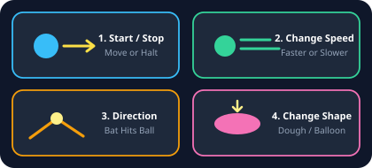
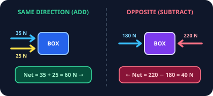
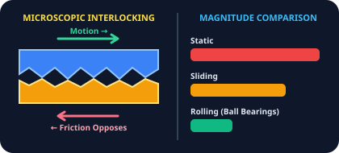
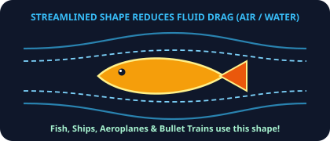
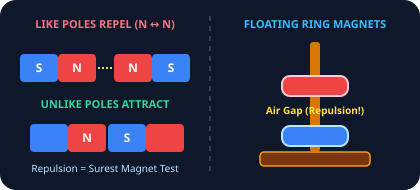
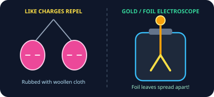
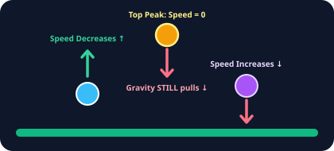
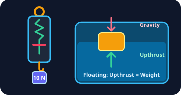
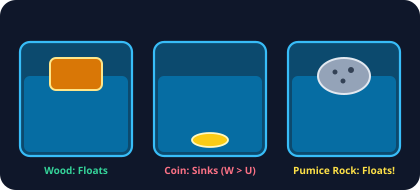

Chapter 5 • Physics Master Notes
Exploring Forces
 NCERT Class 8 Curiosity • BHU CHS Edition
NCERT Class 8 Curiosity • BHU CHS Edition
Key Highlights
- ✓Force: Push or pull from interaction between at least two objects.
- ✓SI Unit: newton (N) (small 'n' in full); CGS Unit: dyne (1 N = 10⁵ dynes).
- ✓Contact Forces: Muscular force & Frictional force.
- ✓Non-Contact Forces: Magnetic, Electrostatic & Gravitational force.
W = m × g | 1 N = 10⁵ dynes
Weight (N) = Mass (kg) × g (9.8 m/s² ≈ 10 m/s²) • Mass NEVER changes!
1. Force, State of Motion & Balanced Forces
- ✓4 Effects of Force: (1) Move from rest / stop motion, (2) Change speed, (3) Change direction, (4) Change shape.
- ✓Vector Quantity: Needs both magnitude (strength) and direction.
- ✓Balanced Forces: Net force = 0 N → no change in speed/direction, though balanced squeezes CAN change shape (e.g. pressing a sponge)!
- ✓Unbalanced Force: Required whenever an object is in non-uniform motion (accelerating, slowing, or turning).

4 Effects of Force
2. Net Force Rules & Interactive Calculator
- ✓Same Direction: Forces add up → F_net = F₁ + F₂.
- ✓Opposite Direction: Forces subtract → F_net = |F₁ − F₂| toward larger force.

Same Direction vs Opposite Direction Forces
 3. Contact Forces: Muscular Force & Friction
3. Contact Forces: Muscular Force & Friction
- ✓Muscular Force: Powers walking, lifting, heart pumping blood & peristalsis (pushing food during digestion).
- ✓Cause of Friction: Interlocking of microscopic surface irregularities; always acts opposite to motion.
- ✓Order: Static > Sliding > Rolling (ball bearings & suitcase wheels convert sliding into tiny rolling friction).
- ✓Increasing Friction: Shoe/tyre treads, kabaddi soil, gymnast chalk. Reducing: Oil, grease, carrom powder.
- ✓Friction Produces Heat: Rubbing palms, striking matchsticks, and meteors burning in air!

Microscopic Interlocking & Static > Sliding > Rolling
 4. Fluid Friction (Drag) & Streamlined Shapes
4. Fluid Friction (Drag) & Streamlined Shapes
- ✓Drag: Frictional force exerted by fluids (liquids & gases like water and air).
- ✓Streamlined Design: Tapered smooth shapes of fish, birds, boats, aeroplanes, and bullet trains cut fluid drag and save fuel!

Smooth Fluid Flow Around a Streamlined Body
 5. Magnetic Force (Non-Contact)
5. Magnetic Force (Non-Contact)
- ✓Magnetic Materials: Iron, Nickel, Cobalt (and steel).
- ✓Poles Rule: Like poles (N–N, S–S) repel; unlike poles (N–S) attract.
- ✓CHS Sure Test: Repulsion (not attraction!) proves a metal bar is a true magnet.
- ✓Levitation: Ring magnets with like poles facing float on a wooden stick as magnetic repulsion balances gravity.

Magnetic Attraction, Repulsion & Levitation
 6. Electrostatic Force, Static vs Current & Electroscope
6. Electrostatic Force, Static vs Current & Electroscope
- ✓Static Charges: Built by rubbing (e.g., plastic scale with polythene, balloons with woollen cloth).
- ✓Charge Rules: Two types (+ and −); like charges repel, unlike charges attract; a charged body also attracts uncharged paper bits.
- ✓Electroscope: Detects charge when two foil leaves diverge due to like-charge repulsion.
- ✓Dry vs Humid Day: Works best on dry winter days; moisture & bare hand touch leak charge away (earthing).

Like-Charge Repulsion & Foil-Leaf Electroscope
7. Gravitational Force & Vertical Motion Traps
- ✓Always Attractive: Gravity NEVER repels; acts between all masses (Newton's Universal Law; holds atmosphere & causes tides).
- ✓Vacuum Free Fall: An iron ball and a feather dropped together in a vacuum hit the ground at the exact same time!
- ✓CHS Peak Trap: At the topmost height of a ball thrown up, speed = 0, but gravity STILL pulls downward!
- ✓Poles vs Equator: Gravity & weight are slightly greater at the Poles than at the Equator.

Ball Thrown Upward: Speed = 0 at Peak, Gravity Always ↓
 8. Mass vs Weight, Spring Balance & Planetary Lab
8. Mass vs Weight, Spring Balance & Planetary Lab
| Property | Mass (m) | Weight (W = mg) |
|---|
| Definition | Amount of matter in an object | Gravitational pull on the object |
| SI Unit | kilogram (kg) | newton (N) |
| Instrument | Beam balance | Spring balance |
| Does it change? | Constant everywhere (Earth, Moon, Space) | Changes with gravity (Moon ≈ 1/6th; Zero in deep space) |

Spring Balance (N) & Upthrust = Weight
9. Buoyancy, Archimedes' Principle & Pumice
- ✓Archimedes' Principle: Upward buoyant force = weight of liquid displaced.
- ✓Floating vs Sinking: Floats if Upthrust = Weight (wood, hollow iron ship, porous Pumice rock); sinks if Weight > Upthrust (coin).
- ✓Apparent Weight: Buoyant Force = Weight in Air − Weight in Water (mug feels lighter underwater!).
- ✓Dipping Depth Rule: Among same-sized floating blocks, the one dipping deepest is the heaviest (w_deepest > w_medium > w_shallowest).
- ✓Instruments & Apps: Lactometer (milk purity) & Submarines (ballast tanks).

Wood Floats, Coin Sinks & Pumice Floats
10. Interactive CHS Physics Rapid-Fire Flashcards
 Quick Revision
Quick Revision
- ✓SI unit of Force & Weight = N; Mass = kg.
- ✓In vacuum, iron ball & feather fall together!
- ✓Salty seawater gives greater upthrust than freshwater.
Practice Quiz (150 MCQs)
Test your Physics concepts with numerical & CHS drills!
Start Quiz →